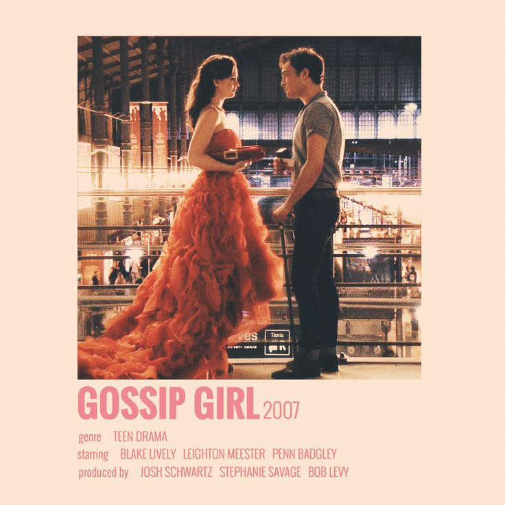

Since childhood, I've been an avid reader, with a particular love for sci-fi, tragic, fantasy, mystery, thriller, and young adult novels. Each book takes me on a new adventure, allowing me to experience different worlds and lives. My passion for stories even led me to try my hand at writing and crafting tales of my own. Unfortunately, I had to put that dream on hold during college due to time constraints, but the love for storytelling has never left me.
Aside from reading, I have a deep affection for TV series. Currently, I'm obsessed with "Gossip Girl." The drama, the fashion, the intrigue—every episode keeps me on the edge of my seat!
I also have a soft spot for 2000s American rom-com movies. There's a charm and a sense of nostalgia in those films that I can't resist. They're my go-to for a cozy night in, offering a perfect blend of humor, romance, and feel-good moments.